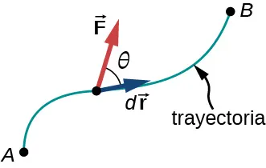
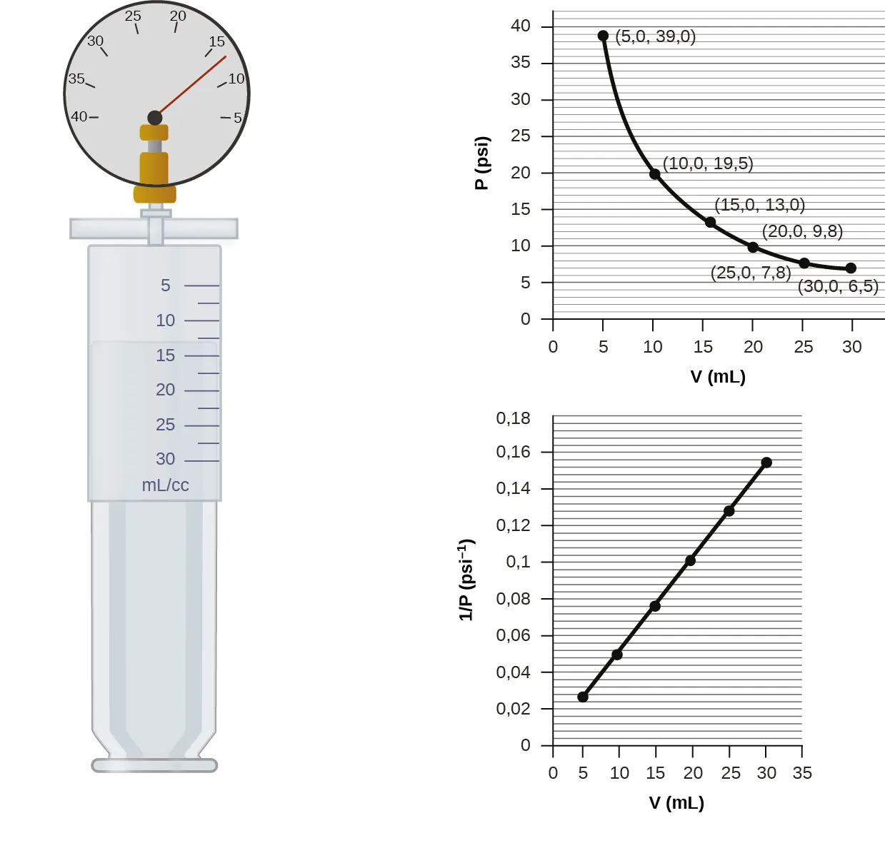
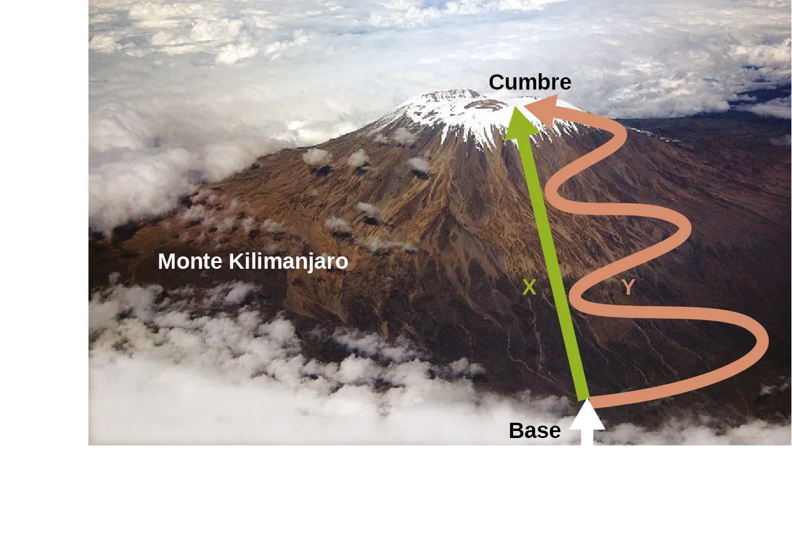
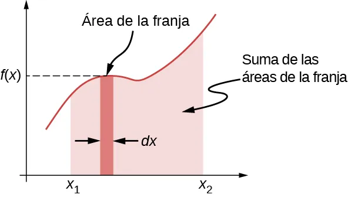
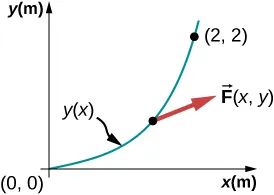
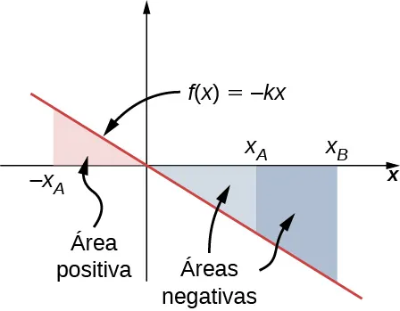

IES Valle del Alberche

📘 Enunciado
Partiendo de la definición diferencial de trabajo \( \mathrm{d}W = -p \, \mathrm{d}V \), de la ecuación de estado de los gases ideales \( pV = nRT \), y de la condición de proceso isotérmico (\( T = \text{cte} \)), demostrar que el trabajo realizado por un gas ideal en una expansión isotérmica reversible desde un volumen \( V_i \) hasta un volumen \( V_f \) viene dado por:





🎯 Objetivo
Obtener la expresión analítica del trabajo en un proceso isotérmico reversible, mostrando que no puede calcularse simplemente como \( W = -p\Delta V \) porque la presión varía durante la expansión. Esta demostración introduce la necesidad del cálculo integral en termodinámica y conecta el concepto de trabajo con el área bajo la curva en un diagrama \( p \)-\( V \).



🔬 Procedimiento
Desde el punto de vista geométrico, esta integral es el área bajo la isoterma en el diagrama \(p\)-\(V\) entre \(V_i\) y \(V_f\):


✅ Resultado
Equivalentemente, usando la ley de Boyle-Mariotte (\( p_i V_i = p_f V_f \)), puede escribirse como:




🧪 DESMITIFICANDO el trabajo isotérmico Púlsame
2 moles de un gas ideal se expanden isotérmicamente a \( T = 300 \, \text{K} \) desde un volumen de \( 10 \, \text{L} \) hasta \( 30 \, \text{L} \). Calcula el trabajo realizado por el gas (en J).
Dato: \( R = 8.31 \, \text{J mol}^{-1}\text{K}^{-1} \).
Paso 1: Identificar datos: \( n = 2 \, \text{mol} \), \( T = 300 \, \text{K} \), \( V_i = 10 \, \text{L} \), \( V_f = 30 \, \text{L} \).
Paso 2: Aplicar \( W = -nRT \ln\left( \frac{V_f}{V_i} \right) \).
\( W = -2 \times 8.31 \times 300 \times \ln\left( \frac{30}{10} \right) \).
\( W = -4986 \times \ln 3 \approx -4986 \times 1.0986 \approx -5478 \, \text{J} \).
Resultado: El trabajo realizado por el gas es \( -5.48 \, \text{kJ} \) (signo negativo: el sistema cede energía).
0.5 moles de gas ideal se comprimen isotérmicamente a \( 400 \, \text{K} \) desde \( 5 \, \text{L} \) hasta \( 2 \, \text{L} \).
- a) Calcula el trabajo realizado sobre el gas.
- b) ¿Cuánto calor intercambia el gas? Indica si lo absorbe o lo cede.
Dato: \( R = 8.31 \, \text{J mol}^{-1}\text{K}^{-1} \).
a) \( W = -nRT \ln\left( \frac{V_f}{V_i} \right) = -0.5 \times 8.31 \times 400 \times \ln\left( \frac{2}{5} \right) \).
\( W = -1662 \times \ln(0.4) = -1662 \times (-0.9163) \approx +1523 \, \text{J} \).
(Signo positivo: trabajo realizado sobre el sistema).
b) En un proceso isotérmico \( \Delta U = 0 \), por lo que \( Q = -W \).
\( Q = -1523 \, \text{J} \) (signo negativo: calor cedido por el sistema).
Resultado: Se realiza un trabajo de \( +1.52 \, \text{kJ} \) sobre el gas, y el gas cede \( 1.52 \, \text{kJ} \) de calor al entorno.
Un gas ideal se expande isotérmicamente desde una presión inicial de \( 2.0 \, \text{atm} \) y un volumen de \( 4.0 \, \text{L} \) hasta que la presión cae a \( 1.0 \, \text{atm} \). Si la temperatura es \( 350 \, \text{K} \), calcula el trabajo realizado por el gas (en J).
Datos: \( R = 0.082 \, \text{atm·L·mol}^{-1}\text{K}^{-1} \) y \( 1 \, \text{atm·L} = 101.3 \, \text{J} \).
Paso 1: Primero hallamos \( n \) usando el estado inicial: \( n = \frac{p_i V_i}{RT} = \frac{2.0 \times 4.0}{0.082 \times 350} = \frac{8.0}{28.7} \approx 0.2787 \, \text{mol} \).
Paso 2: Usamos la forma \( W = -nRT \ln\left( \frac{p_i}{p_f} \right) \) (pues \( \frac{V_f}{V_i} = \frac{p_i}{p_f} \)).
\( W = -0.2787 \times 0.082 \times 350 \times \ln\left( \frac{2.0}{1.0} \right) \).
\( nRT = 0.2787 \times 0.082 \times 350 \approx 8.00 \, \text{atm·L} \).
\( W = -8.00 \times \ln 2 \approx -8.00 \times 0.6931 = -5.545 \, \text{atm·L} \).
Paso 3: Convertir a julios: \( -5.545 \times 101.3 \approx -561.7 \, \text{J} \).
Resultado: El trabajo es \( -562 \, \text{J} \).
Un mol de gas ideal a \( 300 \, \text{K} \) se expande desde \( 2 \, \text{L} \) hasta \( 6 \, \text{L} \).
- a) Calcula el trabajo si la expansión es reversible e isotérmica.
- b) Calcula el trabajo si la expansión se realiza contra una presión externa constante de \( 1 \, \text{atm} \) (irreversible).
Datos: \( R = 0.082 \, \text{atm·L·mol}^{-1}\text{K}^{-1} \), \( 1 \, \text{atm·L} = 101.3 \, \text{J} \).
a) Reversible: \( W_{\text{rev}} = -nRT \ln\left( \frac{V_f}{V_i} \right) = -1 \times 0.082 \times 300 \times \ln(6/2) \).
\( W_{\text{rev}} = -24.6 \times \ln 3 \approx -24.6 \times 1.0986 = -27.03 \, \text{atm·L} \).
Convertimos: \( -27.03 \times 101.3 \approx -2738 \, \text{J} \).
b) Irreversible a presión constante: \( W_{\text{irr}} = -p_{\text{ext}} \Delta V = -1 \times (6-2) = -4 \, \text{atm·L} \).
\( W_{\text{irr}} = -4 \times 101.3 = -405.2 \, \text{J} \).
Comparación: El trabajo reversible es mucho mayor en magnitud (\( -2738 \, \text{J} \) vs \( -405 \, \text{J} \)), lo que demuestra que el máximo trabajo se obtiene en un proceso reversible.
En un motor, 0.2 moles de gas se expanden isotérmicamente a \( 500 \, \text{K} \) desde \( 0.10 \, \text{L} \) hasta \( 0.50 \, \text{L} \). Calcula el trabajo realizado por el gas y la cantidad de calor que debe absorberse para mantener la temperatura constante.
Dato: \( R = 8.31 \, \text{J mol}^{-1}\text{K}^{-1} \).
Paso 1: \( W = -nRT \ln\left( \frac{V_f}{V_i} \right) = -0.2 \times 8.31 \times 500 \times \ln\left( \frac{0.50}{0.10} \right) \).
\( W = -831 \times \ln 5 \approx -831 \times 1.6094 = -1337.5 \, \text{J} \).
Paso 2: En isotermo, \( \Delta U = 0 \Rightarrow Q = -W = +1337.5 \, \text{J} \).
Resultado: El gas realiza \( -1.34 \, \text{kJ} \) de trabajo y absorbe \( 1.34 \, \text{kJ} \) de calor del entorno.

Con un par de multiplicaciones y algo de práctica, esto es más fácil de lo que parece.
(Los detalles sobre lo que entra en las pruebas escritas se publicarán periódicamente en M.Teams).